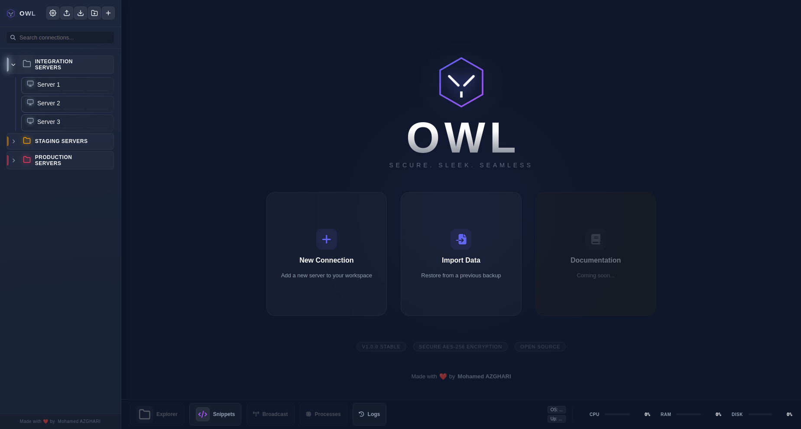

Secure. Sleek.
Seamless.
A high-performance connection manager for Linux. Secure, fast, and built for modern workflows.

Engineered for Excellence
Manage your remote servers from a single, unified interface.
Purple Dark UI
Glassmorphism workspace with a curated violet palette, smooth motion, and dock-based tools.
Secure Vault
Local AES-256-GCM encryption with master password, auto-lock, and vault reset when needed.
SSH Terminal
xterm.js sessions with broadcast mode, bastion ProxyJump, and advanced OpenSSH options.
OWL Sage
AI copilot for diagnostics and commands via OpenAI, Anthropic, Gemini, or LiteLLM.
SFTP Explorer
Integrated file manager with drag-and-drop uploads and directory insights.
Docker Explorer
Browse containers, images, and volumes with live logs from the same SSH session.
Monitoring
Live CPU, RAM, and disk metrics for your active connections.
Snippets & Logs
Command snippets, session logging, and a searchable log viewer with rotation.
Secure by Design
OWL uses industry-standard AES-256-GCM encryption to protect your connection details. All data is stored locally on your machine.
- Local-only storage (No Cloud)
- Master Password Protection
- Session Auto-Lock
- Vault Reset (destructive wipe)